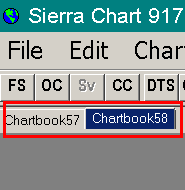
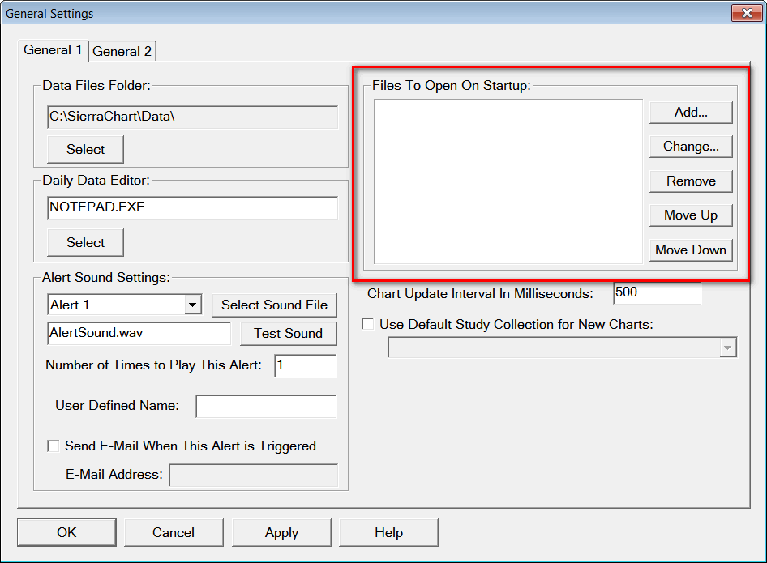

Chartbooks (Workspaces)
- Introduction
- To Create a New Chartbook
- To Add a New Chart To a Chartbook
- To Add a New Trade DOM To a Chartbook
- To Remove a Chart From a Chartbook
- Arranging Open Charts in a Chartbook
- To Save a Chartbook
- To Close a Chartbook
- To Open a Chartbook
- To Open a Chartbook Group
- To Switch Between Loaded Chartbooks
- Deleting a Chartbook
- Making a Copy of a Chartbook
- Duplicating Multiple Charts to a Chartbook
- Moving Multiple Charts to a Different Chartbook
- Automatically Open a Chartbook
- Selecting Charts or Navigating Among Charts
- Renaming a Chartbook
- Reordering Chartbook Tabs
- Combining Chartbooks
- Keeping a Chart Window Always Visible / Sharing a Chart Between Chartbooks
- Creating a Chartbook Group
- Sharing a Chartbook with Another User or Copying it to Another Installation
- Restoring Prior State of Chartbook
- Using a Chartbook Provided by Sierra Chart Support
- Sharing a Chart with Another User
- Accessing a Backup Chartbook File
- No Charts Visible when Open Chartbook
- Notes
- Potential Operating System Issue When Saving Chartbook During System Shut Down
- Sensitive Information
- Opening Older Chartbooks
Introduction
All chart windows, Time and Sales windows, Market Depth windows, Trade windows for charts, Trade DOM windows, and Spreadsheets used by the Spreadsheet studies are contained within Chartbooks. A Chartbook is not a window. It is a collection of multiple windows.
A Chartbook is like a desktop/layout/workspace for Sierra Chart. Multiple charts and other windows can be within a single Chartbook. When a chart or Trade DOM window is opened, it is added to a Chartbook. A new Chartbook named chartbook#.cht is created if one is not already open when a chart or Trade DOM is opened.
The charts and other windows are saved by saving the entire Chartbook they are contained within. A Chartbook can be later opened with all the charts, other windows and all of the related settings completely restored to the way they were when you closed it, assuming you saved the Chartbook at the time of closing the Chartbook.
Many Chartbooks can be loaded but only 1 can be visible at a time in an instance of Sierra Chart. To have multiple Chartbooks visible at the same time requires that you use additional instances of Sierra Chart. Each instance can display a separate Chartbook. For instructions, refer to Using DTC Server for Data and Trading in Another Sierra Chart Instance.
It is not possible to save a chart independent from a Chartbook. If you want just one chart within a Chartbook, then you do have the ability to do that just by saving the Chartbook that contains a single chart. Although there is also the capability to duplicate existing charts. Refer to Using Chart Templates.
Refer to the File Menu documentation page for commands to use with chartbooks.
Refer to the Chartbook Tasks section below for all of the various Chartbook related tasks that you can do.
To Create a New Chartbook
Select File >> New Chartbook on the menu. If there is already a Chartbook opened, then that Chartbook will be hidden.
To switch back to the previous Chartbook, select it from the CB menu.
To add a chart to the Chartbook, refer to To Add a New Chart To a Chartbook.
To Add a New Chart To a Chartbook
Open or switch to the Chartbook you want to add a chart window to.
Open a Chartbook with File >> Open Chartbook on the menu.
You can switch to an open Chartbook by finding and selecting it on the CB menu.
Select File >> Find Symbol to open a chart by selecting a symbol from the list and pressing Open Historical Chart or Open Intraday Chart. For complete documentation, refer to Find Symbol.
Configure the chart the way you require. After that, Save the Chartbook. You can add as many charts as you want to a Chartbook without limit.
To Add a New Trade DOM To a Chartbook
To add a new Trade DOM to a Chartbook, open or switch to the Chartbook you want add the Trade DOM to.
Open a Chartbook with File >> Open Chartbook on the menu.
You can switch to an open Chartbook by finding and selecting it on the CB menu.
Select File >> Open Trade DOM to open a Trade DOM. This will open the Find Symbol window, where you can then select or enter a symbol and press the Open Trading DOM button to open the Trade DOM.
Set it up the way that you require, then Save the Chartbook.
A Trade DOM is a special version of a chart used specifically for trading purposes.
To Remove a Chart From a Chartbook
To remove a chart from a Chartbook, the first step is to make sure the chart you want to remove is active by clicking anywhere on the chart window. Select File >> Close Active Window on the menu. If prompted to remove the chart, press Yes.
Alternatively you can click the X button at the top right of the chart window to close it and remove it from the Chartbook.
Save the Chartbook by selecting File >> Save.
If you no longer want the underlying data file for the chart that has been removed, then follow the Deleting Chart Data File instructions.
Arranging Open Charts in a Chartbook
It is possible to automatically arrange the open charts in your Chartbook by selecting one of the following commands on the Window menu: Cascade, Tile Horizontally, Tile Vertically.
To arrange the Z axis ordering of the charts, which is necessary to have the charts open in a particular order, use the Window >> Windows and Chartbooks window.
To Save a Chartbook
Go to one of the visible charts in the Chartbook and make sure it is active. You can do that by left clicking on its title bar with your Pointer or on the window itself.
Select File >> Save or File >> Save As on the menu.
If you select File >> Save As or if the Chartbook was never saved before, then a File Save window will be displayed. Enter a file name to save it to. Press Save to save the Chartbook.
You can not use the following file system reserved characters in the file name:
- < (less than)
- > (greater than)
- : (colon)
- " (double quote)
- / (forward slash)
- \ (backslash)
- | (vertical bar or pipe)
- ? (question mark)
- * (asterisk)
To Close a Chartbook
Select File >> Close Chartbook on the menu. You can also use the Close Chartbook Control Bar button. The Control Bar by default is located below the main menu of the main Sierra Chart window. This button can be added through Global Settings >> Customize Control Bars >> Control Bar #.
To Open a Chartbook
Select File >> Open Chartbook on the menu.
Select the Chartbook file in the list of files in the Open Chartbook window and press Open.
To open multiple Chartbooks at the same time, enable the Multiple Selection option on the Open Chartbook window and select the Chartbooks in the list of files by left clicking on them with your Pointer. Press the Open button.
Or, select the Chartbook which has been recently saved or opened, from the list of Chartbooks listed on the right side of the File menu.
Using either method, all of the charts in the Chartbook will open with all the same settings, window sizes and positions, at the time that Chartbook was last saved.
When a Chartbook is opened, all existing charts will be scrolled to the very end and displaying the most recent Date-Time available in the chart data. This is the standard behavior and cannot be changed.
To Open a Chartbook Group
A Chartbook Group is a collection of Chartbooks that has been grouped together in order to quickly open them at one time.
To open a Chartbook Group, select File >> Open Chartbook Group on the menu.
Select the Chartbook Group in the list of files in the Open Chartbook Group window and press Open.
The setting Close Existing Chartbooks When Open Chartbook Group controls whether open Chartbooks are automatically closed when opening a Chartbook Group or if they remain open.
For information on how to create a Chartbook Group, refer to Creating a Chartbook Group.
To Switch Between Loaded Chartbooks
There are 3 ways to switch between loaded chartbooks:
- Chartbook Tabs

- Select Global Settings >> General Settings >> Windows.
- Enable the Show Chartbooks Tabs option in the Tabs frame.
- Set Place Chartbook Tabs At to either Top or Bottom depending upon where you want them. Press OK.
- You will see Chartbook tabs displayed on the main Sierra Chart window.
- Each tab will have the Chartbook name on it for the Chartbook it is for. Click on any of these tabs to switch among the loaded Chartbooks. Refer to image.
- Keyboard : Use F7 or F8 keys to switch to the prior or next Chartbook. The Window menu also has the same commands for switching to another Chartbook. When switching to another Chartbook, the currently visible one will be hidden and the next one will be displayed.
- Menu : Select CB on the menu. This lists all of your opened chartbooks. Select on the menu the Chartbook name to switch to.
{kind=link}
Deleting a Chartbook
- Select File >> Open Chartbook on the menu.
- Locate the Chartbook filename in the file list in the displayed Open Chartbook window. You can use the Search box at the top to help locate the file by typing a portion of the filename.
- Selects the Chartbook filename.
- Press the Delete File button.
- Press the Cancel button.
- If you have recently opened a Chartbook that you have later deleted and you want to clear it from the Recently Used File List on the right side of the File menu, then select File >> Clear Recent File List.
Making a Copy of a Chartbook
- Open the Chartbook you want to make a copy of by following the To Open a Chartbook instructions.
- Select File >> Save As on the menu.
- Enter the new file name in the File Name box that you want to save the Chartbook as.
- Press the Save button. The currently open Chartbook now represents a copy of the original Chartbook.
- To open the original Chartbook, follow the To Open a Chartbook instructions.
Duplicating Multiple Charts to a Chartbook
It is supported to duplicate multiple charts in a single step from one Chartbook to another open Chartbook. Follow the below steps to do this.
- Open both of the Chartbooks you want to duplicate charts from and to, by following the To Open a Chartbook instructions.
- Go to the Chartbook through the CB menu that you want to duplicate charts from.
- Select Chart >> Duplicate All Charts to Chartbook.
- In the displayed list of Chartbooks, select a particular Chartbook you want to duplicate the charts to and press OK.
- The charts from the visible Chartbook will now be duplicated to the selected Chartbook.
Moving Multiple Charts to a Different Chartbook
Follow the instructions below to move multiple charts from one Chartbook to another Chartbook.
- Either Open an existing Chartbook or create a New Chartbook.
- Go to the source Chartbook through the CB menu that you want to move charts from.
- Go to one of the charts you want to move by selecting it from the CW menu. Select Chart >> Duplicate Chart to Chartbook to put a copy of it in the destination Chartbook. For instructions, refer to Duplicate Chart To Chartbook.
- Repeat the above step for each chart you want to move.
- Close each of the charts that you no longer need in the original source Chartbookby selecting the chart from the CB menu and then selecting File >> Close Active Window.
- Select File >> Save All to save both Chartbooks.
- Go to the destination Chartbook to see the moved charts by selecting it from the CB menu.
Automatically Open a Chartbook
{kind=link}
To open a Chartbook automatically when you start Sierra Chart, select Global Settings >> General Settings on the menu. In the Files To Open on Startup frame, press the Add button. Select an existing saved Chartbook from the Open File window and press Open. If you wish to remove a Chartbook from this list, highlight it in the list and press the Remove button.
Controlling the Order in Which Chartbooks Are Automatically Opened
To have your Chartbooks opened in a particular order so they appear in a particular order on the Chartbook tabs after they are opened, then follow these steps:
- Add your Chartbooks to the Files To Open on Startup list.
- Select a particular Chartbook in the list and press the Move Up or Move Down buttons to adjust its position in the list. Adjust the order of other Chartbooks as necessary. Chartbooks listed at the top are opened first.
Unexpected Chartbook Automatically Opening
If a particular Chartbook is automatically opening and it is not listed in the Files To Open on Startup list, therefore it must be being opened through a UDP Port command to open a Chartbook. A separate program would be doing this. For further information, refer to UDP Interface.
Selecting Charts or Navigating Among Charts
Refer to the Selecting Charts or Navigating Among Charts documentation.
Renaming a Chartbook
- If you want to change the name of a new Chartbook which has not yet already been saved, then select File >> Save As on the menu. Type the name in the File Name box and press Save. Stop here.
- It is first recommended that you close the Chartbook you wish to rename if it is open. To close the Chartbook if it is open, make sure the Chartbook is active by selecting it from the CB menu and then select File >> Close Chartbook on the menu.
- Select File >> Open Chartbook on the menu. Locate and select the Chartbook in the list of Chartbooks in the displayed Open Chartbook window.
- Press the Rename button.
- Type in the new name. The file extension still needs to be Cht. If the file extension is not specified it will automatically be added.
- Once you have renamed the Chartbook, simply select it in the list and press Open to reopen it.
Reordering Chartbook Tabs
Once multiple chartbooks are open, it is possible to change the order in which the chartbooks are diplayed by moving the tabs that display the chartbook information.
To move a tab, select the tab with the left pointer and drag it to the new position desired among the other tabs. When the tab is selected and the pointer has started to move, a red bar will appear next to another tab indicating the position to which the tab will be moved. Refer to the image below.
It is not possible to move the Chartbook Tab to another position within the program. It can only be rearranged within the space for the tabs.
{kind=link}
In order to open chartbooks in a specific order, set the order of the chartbooks in Files to Open on Startup.
Combining Chartbooks
Follow the instructions below to combine charts from two Chartbooks into a single Chartbook. The basic procedure is that you will duplicate charts from one Chartbook to another Chartbook.
- Open both Chartbooks that you want to combine.
- Go to one of those open Chartbooks through the CB menu.
- Duplicate All of the charts for the selected Chartbook into the other Chartbook that you have open.
- This other Chartbook will now have all of the charts from both Chartbooks. You can select it from the CB menu.
Keeping a Chart Window Always Visible / Sharing a Chart Between Chartbooks
It is possible to keep a chart window always visible even if it is not part of the active Chartbook, but the Chartbook is still open in the background. This allows you to share a chart between Chartbooks and always keep a particular chart or charts always visible.
Go to the chart that you want to make always visible and select Window >> Window Always Visible. Uncheck this menu command to make a chart only visible when the Chartbook it is part of, is the active Chartbook. It is recommended not to overuse this feature, so there is no confusion as to what Chartbook a chart belongs to.
Window >> Window Always Visible: This command applies to chart windows. When this option is checked, indicating it is enabled, then a chart window will always remain visible even when it is part of a Chartbook that is not the active Chartbook. This allows you to share a chart among multiple Chartbooks. The chart still belongs to its own Chartbook, but it still remains visible when another Chartbook is active.
Creating a Chartbook Group
A Chartbook Group can be created in order to open a collection of Chartbooks at the same time. In order to create the group of Chartbooks, follow these instructions:
- Create and save the Chartbooks that you want to include in the Chartbook Group.
- When you save a Chartbook file, it is saved to the Sierra Chart Data Files Folder with a Cht file extension. To determine the location of the Data Files Folder, select Global Settings >> General Settings. Look in the Data Files Folder box. Make a note of this complete folder path.
- Go to the Data Files Folder on your system through the file manager program in your operating system.
- Copy or Cut the desired Chartbook file(s) in the Data Files Folder that will be placed into a single Chartbook Group.
- In the file manager program change to the folder named ChartbookGroups that is located in the Data Files Folder.
- Create a new folder with the name of the Chartbook Group that you want to create.
- In the file manager program change to this new folder that was just created.
- Paste the Chartbook files into this folder.
- Repeat steps 1 through 8 as necessary to create as many Chartbook Groups as desired.
Chartbooks that are placed into a Chartbook Group are separate from Chartbooks that are accessible through File >> Open Chartbook. This means that there can be Chartbooks with the same name available, but these Chartbooks are not linked in any way, therefore changes made to one Chartbook will not affect the other one.
For example, if MyChartbook is in the main Sierra Chart Data Files Folder, and this Chartbook is copied into a Chartbook Group folder named Group1, then changes made to MyChartbook when opened using File >> Open Chartbook will not be reflected in the MyChartbook when opened using File >> Open Chartbook Group.
Sharing a Chartbook with Another User or Copying it to Another Installation
Follow the instructions below to share a Chartbook with another user or copy it to another installation of Sierra Chart.
- The first thing to be aware of is that color settings for the main price graph in a chart use the global color settings (Global Settings >> Graphics Settings-Global). Therefore, unless the destination copy of Sierra Chart that you are copying the Chartbook to uses the same global color settings, the main price graph colors will be different.
One solution to this is to use the chart specific color settings which are set through Chart >> Graphics Settings. For additional information, refer to Graphics Settings. - First save the Chartbook if it has not already been saved by selecting File >> Save. If it has not been previously saved, you will be presented with a Save File window to specify the File Name.
The current name of the Chartbook will be shown in the File Name box and can be modified. If the Save File window is not displayed, then you can find out the name of your active Chartbook by looking on the title bar of the main window of Sierra Chart. - When you save the Chartbook file, it is saved to the Sierra Chart Data Files Folder with a Cht file extension.
- To determine the location of the Data Files Folder, select Global Settings >> General Settings. Look in the Data Files Folder box. Make a note of this complete folder path.
- Go to the Data Files Folder on your system through the file manager program in your operating system.
- If you will be providing the Chartbook file to another user, then you will need to provide that user a copy of the Chartbook file.
If you will be copying the Chartbook to another installation of Sierra Chart on a different computer, then you will need to copy it to the other computer. Otherwise, if you will be copying it to another folder on the same system, then you can just simply Copy it from the source folder and Paste it into the destination Data Files Folder. Refer to the next step to determine the location of the destination Data Files Folder. - The Chartbook file needs to be copied/saved to the Data Files Folder in the destination copy of Sierra Chart where it will be used. To determine the location of the Data Files Folder in the destination copy of Sierra Chart where you will be using a copy of the Chartbook, select Global Settings >> General Settings in this copy of Sierra Chart. Look in the Data Files Folder box. That folder is where you need to save the Chartbook to.
- In the case of a destination instance started with File >> New Instance, the destination Data Files Folder will be located in [main Sierra Chart installation path]\SierraChartInstance_#\Data where # is a number starting from 2 depending upon the instance number.
- After saving Chartbook file, to open the Chartbook in the destination copy, select File >> Open Chartbook. Select the Chartbook in the file list and press Open.
- When the Chartbook is opened in another installation of Sierra Chart that is connected to the same Data or Trading service, the chart data will be automatically downloaded for the charts in the Chartbook.
If the Chartbook is used in a copy of Sierra Chart using a different Data or Trading service, then the symbols of the charts most likely will need to be changed to match the Data or Trading service that it is being used with. Refer to Changing Symbol of Chart for instructions. - In the case where you are using any of the Spreadsheet studies in a chart in the Chartbook you have copied, you also need to copy the Spreadsheet files. These have a .scss file extension. These are also located in the Data Files Folder and need to be saved into the Data Files Folder of the destination installation.
Restoring Prior State of Chartbook
If you need to go back to a prior state of a Chartbook when that Chartbook has already been saved and after changes to the Chartbook which have not yet been saved, then follow the instructions below.
For example if a chart window is mistakenly closed and it was previously saved as part of a Chartbook which is currently open, then it is possible to restore it.
- Select File >> Close Chartbook to close the Chartbook.
- When prompted to save the Chartbook, press No.
- Open the Chartbook by selecting File >> Open Chartbook.
- Select that Chartbook from the list of files and press the Open button.
- At this point, you will have the prior state of the Chartbook at the last time it was saved.
- Additionally, there are backup Chartbooks available, one for each day of the month, which can be restored. For instructions to use a backup Chartbook, refer to Backup Chartbooks Files.
Using a Chartbook Provided by Sierra Chart Support
Follow the instructions below to save a Chartbook from the Support Board which has been provided by Sierra Chart support or another user.
- Go to the message thread on the Support Board which contains the posting which has an attached Chartbook. Refer to the image below.
- Left click on the Chartbook file name at the bottom of the posting which has a CHT file extension.
- Your web browser should prompt you for the location to save this file. It needs to be saved to the Sierra Chart Data Files Folder. To determine the location of the Data Files Folder, select Global Settings >> General Settings. Look in the Data Files Folder box. This is where you need to save the Chartbook file from your web browser.
- Go to Sierra Chart and select File >> Open Chartbook.
- You will see the Chartbook you saved listed.
- Select the Chartbook in the list of files and press the Open button.
- When the Chartbook is opened and Sierra Chart is connected to a Data or Trading service which uses symbols which match the symbols used in the Chartbook, the chart data will be automatically downloaded for the charts in the Chartbook.
If the Chartbook is used in a copy of Sierra Chart using a different Data or Trading service compared with the copy the Chartbook originated from, then the symbols of the charts most likely will need to be changed to match the Data or Trading service that it is being used with. The correct symbols are listed in File >> Find Symbol. Refer to Changing Symbol of Chart for instructions to change the symbol of a chart.
For further information about this subject, refer to Symbols.
{kind=link}
Sharing a Chart with Another User
Follow the instructions below to save an individual chart as a new Chartbook which can then be shared with another user.
- Select Chart >> Graphics Settings and uncheck Use Global Graphics Settings Instead of These Settings.
- Set the color and other graphics settings. Refer to the Graphics Settings page.
- Select File >> New Chartbook .
- Go back to the prior Chartbook through the CB menu containing the chart you want to share.
- Select Chart >> Duplicate Chart to Chartbook and duplicate the chart to the new Chartbook you created.
- Go to the new Chartbook through the CB menu and select File >> Save.
- Enter the File Name you want to save it as and press the Save button.
- Share the Chartbook file as explained in the Sharing a Chartbook with Another User Or Copying It to Another System section.
Accessing a Backup Chartbook File
Sierra Chart saves copies of the Chartbook files for the last 30 days. Every time a Chartbook is saved a copy of it is saved in the Backups subfolder. There is a separate backup Chartbook file for each day of the month.
These files are located in the Backups subfolder in the folder that Sierra Chart is installed to on your system.
The File format is [Day of month].[Chartbook Filename].Cht. Example: 1.Chartbook1.Cht
To access a backup Chartbook file, follow the steps given below:
- Select File >> Open Chartbook on the Sierra Chart menu.
- In the Open Chartbook window, press the Folder button.
- In the list of folders, navigate to the Backups folder within the folder that Sierra Chart is installed to. In the list of folders, that should be just above the Data folder.
- Press OK.
- You will now see all of the backup Chartbooks listed in the file list.
- Locate the particular backup Chartbook file that you want and select it.
- Press the Open button.
- After the backup Chartbook file has been opened, select File >> Save As to save it with any name that you want. You can save it as the original name and overwrite the original Chartbook.
This is an important step to follow to ensure the backup Chartbook is saved in the main Data Files Folder.
No Charts Visible when Open Chartbook
After opening the Chartbook and there are no charts visible, the first thing to do is to go to the CW menu and see if there any charts listed.
If there are charts listed, then select Window >> Tile Horizontally / Vertically to make them come into the current container window coordinates. It is also possible that the charts are minimized. In this case select Window >> Maximize to maximize the active chart.
If there are no charts listed on the CW menu, then use a Backup Chartbook because the Chartbook contains no charts.
Notes
- If you want to change the symbol of a chart, refer to the Changing the Symbol of a Chart documentation page for instructions.
- You can save a group of chart studies and add them to a chart with one step. Refer to the Study Collections page for instructions.
- Chartbooks do not contain the data contained in chart data files (files with a .DLY and .SCID extension) from which the chart bars are built from. They only contain chart configuration data.
Potential Operating System Issue When Saving Chartbook During System Shut Down
Rarely but sometimes we receive reports where a user encounters the following error when opening a Chartbook after previously saving it: The Chartbook file is not a valid Chartbook..
After examining a Chartbook which gives this error, what we find is it contains a long series of zero values and nothing but zero values. It is not possible for Sierra Chart to have saved a Chartbook that just contains zero values. Such functionality does not exist in Sierra Chart. The Chartbook saving functionality in Sierra Chart is 100% reliable.
For the users that have experienced this, we have determined that this issue occurs when a user is saving the Chartbooks during the time the computer system is being shut down. Although we are not quite sure exactly how this would be accomplished because when shutting down a Windows computer system, it will not complete if a program is giving a prompt and preventing shutdown which Sierra Chart will. The prompt will be asking you whether you want to save the Chartbooks or not. Nevertheless, the information we have from users is that this problem occurs during system shutdown. It is very rare for some unknown reason the operating system is not saving the actual Chartbook file data before system shutdown and instead is only writing zero values to the file.
Before shutting down your system we recommend exiting Sierra Chart ahead of time to make sure the operating system is committing all of the files to the actual physical storage system which it should do anyway.
For the record we have never ourselves ever observed a problem like this ever.
Effective with version 2183 and higher, Sierra Chart is now requesting the operating system to flush file buffers to the physical file system after writing a Chartbook. We believe this most likely will resolve the issue in the rare cases where users have experienced this. Since this change we have not had any further reports of the problem described in this section. So it confirms, this was the necessary solution.
Sensitive Information
When saving a Chartbook, there is no sensitive information like passwords or connection details saved.
A Chartbook potentially can contain a non-simulated account identifier for each chart. Although if you share a Chartbook with another user, that account identifier would be replaced with the user's own trading account identifier when connected to the trading server.
This trading account identifier in no way can be used to access your trading account.
To prevent the trading account identifier from being saved, you need to put Sierra Chart into Trade Simulation Mode before saving the Chartbook.
Opening Older Chartbooks
Effective with version 2364 and higher, you are not able to open Chartbooks saved in versions more than about two years ago before this version. They are not compatible. The error message you will receive in the Sierra Chart Window >> Message Log will begin with: The Chartbook file is not a valid Chartbook.
This change was made, in order to clean up older code, which dates back to about 20 years ago. We wanted to remove this code in order order to have not any confusion as we are adding support for real-time Chartbook sharing.
Therefore, if you want to open a Chartbook saved more than two years ago in a version before 2364, means that you first need to roll back to version 2363 following the Full Control Rollback Procedure.
Open the Chartbook in version 2363.
Save the Chartbook in version 2363.
Some older Chartbooks need to be opened in version 2204 and saved in 2204 in order to properly access all of the charts within the Chartbook. Once this is done, the Chartbook can be opened in newer versions including 2364 and higher.
Update to the latest version of Sierra Chart with Help >> Download Current Version.
You can then open the Chartbook in newer versions.
*Last modified Monday, 22nd May, 2023.